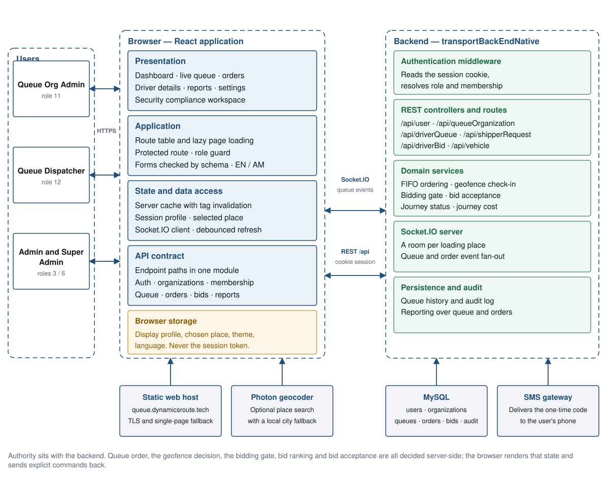
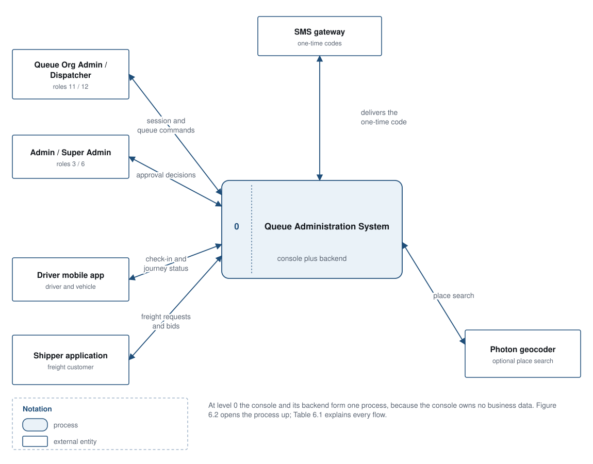
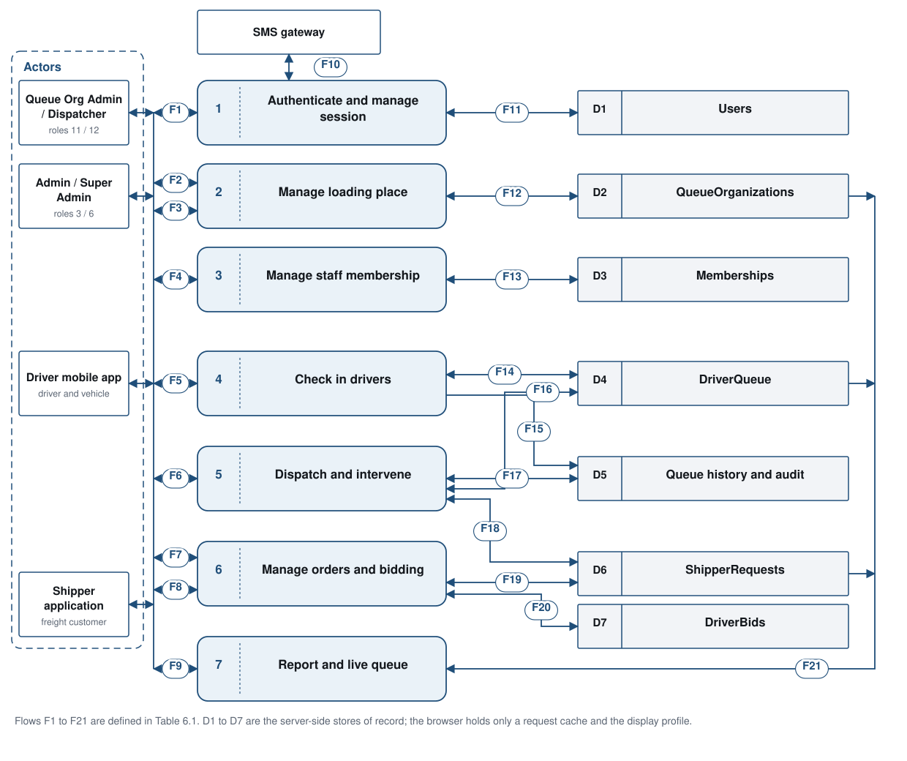

queadmin-frontend, SPA), version 1.0.0
| Document | SDD-1.0.0 — System & Architecture Design Document |
| Application | Dynamics Queue Admin (Queue Admin) — dispatch-queue management console of the Dynamics freight marketplace |
| Asset type | Web Application |
| Asset code | ASSET-DYN-QA-001 |
| Standard | INSA Secure Website Management Standard, Version 1.0, 2014 EC |
| Platform | Vite 8 + React 19 + TypeScript SPA (React Router 7), Redux Toolkit / RTK Query, socket.io-client 4, hand-written CSS |
| Production host | queue.dynamicsroute.tech |
| Design version | 1.0.0 (as-built) |
| Companion documents | SRS, Technical Specifications (TDD/LLD), User Documentation (User Guide), Security Documentation |
| Submitting entity | Dynamics Transport |
| Contact person | Marew Masresha, General Manager — mmarew@gmail.com, 0983222221 |
| Prepared by | Marew Masresha, General Manager |
| Reviewed by | Marew Masresha, General Manager |
| Signatories | Marew Masresha, General Manager |
| Date of preparation | 15 October 2026 |
| Date of submission | 15 October 2026 |
What follows is the design of the Dynamics Queue Admin console release we are submitting,
as it actually exists in queadmin-frontend. It is the design side of the SRS
and was written for review under the INSA Secure Website Management Standard. Where the
backend (transportBackEndNative) is what really enforces a behaviour, we say
so in the text, so a reviewer can tell what the client is responsible for and what the
server decides.
| 1 | Introduction |
| 2 | System overview and context |
| 3 | Architectural design |
| 4 | Functional decomposition |
| 5 | Component design |
| 6 | Data design |
| 7 | Interface design |
| 8 | Security design |
| 9 | Deployment and hosting |
| 10 | Cross-cutting design |
| 11 | Design decisions and trade-offs |
| 12 | Requirements-to-design traceability |
| 13 | Known limitations and future work |
| 2.1 | Level 0 — Context diagram (external ecosystem) |
| 3.1 | System architecture — components and deployment |
| 3.2 | Level 2 — Architecture layers |
| 4.1 | Level 1 — Functional decomposition |
| 6.1 | Data flow diagram, level 0 |
| 6.2 | Data flow diagram, level 1 |
This is the architecture and internal design of the Dynamics Queue Admin web console
(queadmin-frontend, SPA), written against the code as we built it. It covers
the system context, the layers, what the console breaks down into functionally, the
components, the data it holds, the interfaces it calls, how the thing is secured, and how it
is deployed. INSA reviews our submission against this document and the Secure Website
Management Standard (Version 1.0, 2014 EC).
In scope is the client application only (Web Application, asset code
ASSET-DYN-QA-001, version 1.0.0). The backend service
(transportBackEndNative, REST + Socket.IO) appears here only where this SPA
depends on its contracts; its internal design belongs to a separate document. The console
runs a single kind of tenant, a loading place (a Queue Organization), and
it does three things for that tenant: manage the loading place, run the FIFO driver queue,
and handle bidding for shippers.
src/utils/constant.ts, the single source of truth for REST endpoint pathssrc/lib/redux/api/*.ts, the endpoint modules and the RTK Query contractsrc/lib/redux/api/base.ts, the base query, credentials, 401 → logoutsrc/lib/socket.ts, the Socket.IO client with its subscriptions and debounced
invalidation
src/routes/AppRoutes.tsx, the route table and lazy loadingsrc/components/auth/ProtectedRoute.tsx,
src/components/auth/RoleGuard.tsx
src/types/queue.ts and src/lib/redux/api/types.ts, which hold
the domain types
src/data/insaStandard.ts, the INSA standard content behind the compliance
dashboard
vite.config.ts and .env.example, which describe the build and
the environment model
docs/insa/assets/*.mmd and *.svg, the sources for the figures| Term | Definition |
|---|---|
| Queue Organization | A “loading place” tenant of the console (customs, factory, cement, depot, mine, farm, port, other) with coordinates, an optional check-in radius, and an approval status. |
| Queue Org Admin | Role id 11. Administers the loading place: profile, membership, and approval of bidding per order. |
| Queue Dispatcher | Role id 12. Runs the FIFO queue: manual check-in, dispatch, override, remove, history. |
| Admin / Super Admin | Role id 3 / 6. Approve loading places and oversee all organizations. Short session (24h). |
| FIFO queue |
First-in-first-out driver waiting line per vehicle type, keyed by
queueNumber; entries are dispatched, overridden, or removed.
|
| RTK Query |
Server-state data fetching/caching layer; one base api extended by
injectEndpoints.
|
| Entry history / audit | Per-entry change log (column, old value, performed by, performed at) and the backend queue audit trail. |
Dynamics Queue Admin is the dispatch-queue management console of the Dynamics freight
marketplace. Its display name is “Queue Admin”, its asset type is Web Application, its asset
code is ASSET-DYN-QA-001, and the version covered here is 1.0.0. Underneath
it is a single-page React application served in production at
queue.dynamicsroute.tech.
A Queue Organization is a physical loading place. Drivers who get there prove they are
present with a GPS check-in and join a FIFO line. Dispatchers hand queued drivers out to
shipper requests, and can move an entry up the order or drop it entirely; the reason is
optional, and it is recorded when one is given. Queue-org admins look after the place’s
profile and its
members and decide, order by order, whether bidding is open. Platform admins approve
origins and keep watch over every organization. All of those business rules are enforced by
the backend (transportBackEndNative); the console is the layer that renders
them and drives them through the REST and Socket.IO contracts.
| Actor/System | Role |
|---|---|
| Shipper | Creates freight requests (individual or batch); receives bid outcomes for dispatched drivers. |
| Driver / Vehicle Owner | Checks in with GPS, holds a place in the FIFO queue, bids, and updates journey status. Every driver is represented by a vehicle-driver assignment. |
| Queue Org Admin (11) / Queue Dispatcher (12) | The day-to-day operators of the console; they run the loading-place queue and the bidding. |
| Admin (3) / Super Admin (6) | Approve loading places and oversee organizations across the marketplace. |
| Backend REST API |
/api endpoints consumed via RTK Query and legacy axios
(src/utils/constant.ts).
|
| Backend Socket.IO |
Realtime queue fan-out; client subscribes with queue:subscribe
(src/lib/socket.ts).
|
| Photon geocoder (optional) |
Place search for order origin/destination (VITE_PHOTON_URL, default
photon.komoot.io). Falls back to a built-in list of Ethiopian cities.
|
| OpenStreetMap / Nominatim / OSRM | Listed as optional external map services; not wired in this console asset (place search uses Photon). Where absent, no map tiles or routing calls are made. |

/api + cookie session, and Socket.IO
events (per assets/l0.mmd).
ProtectedRoute
→ RoleGuard).
api that feature
endpoint modules extend, plus a legacy axios instance for the few services still using it.
The console is the front half of a three-part system. The browser runs a React
single-page application delivered as static files. The backend
(transportBackEndNative) runs the REST API and the Socket.IO server and is the
only component that touches the database. Underneath sit MySQL, the SMS gateway that
carries one-time codes, and an optional place-search service. There is no server-side
rendering and nothing in between the two: the browser calls the backend directly. That
keeps the deployed asset small and leaves the business rules in one place, which is the
assumption the rest of this document rests on.
Figure 3.1 shows the components and where each one runs. The browser column is the subject of this SDD; the backend column is described only as far as the console depends on it. Every action that changes something leaves the browser as a REST call, and every value on screen arrived from the backend, either in a response or in a pushed event. The client does not invent data.

| Component | Runs on | Responsibility |
|---|---|---|
| React single-page application | The user's browser | Screens, form validation, the request cache and the socket subscription. It holds no business data of its own. |
| Static web host | queue.dynamicsroute.tech |
Serves the built assets over TLS and returns index.html for any path it
does not recognise.
|
| REST API | app.dynamicsroute.tech (backend service) |
Session handling, permission checks, the queue and bidding rules, and persistence through the backend data layer. |
| Socket.IO server | Same backend process | One room per loading place; pushes queue, order and organization events to the consoles that are subscribed. |
| MySQL | Backend host | System of record for users, organizations, memberships, queue entries, orders, bids and audit rows. |
| SMS gateway | External provider | Delivers the six-digit one-time code to the phone number just entered. The backend holds the credentials; the console never sees the code. |
| Photon geocoder | Optional external service | Address search for order origin and destination. When it is unavailable the form falls back to a built-in list of Ethiopian cities. |
Two channels join the browser to the backend, and the split matters for the rest of the design. Requests that ask a question or perform a command go over REST and come back as JSON; each one carries the httpOnly session cookie, so the backend can identify the caller and re-check what that caller may do. Changes other people make — a driver checking in, a bid arriving, a loading place being approved — arrive over Socket.IO, addressed to a room for the selected loading place. Without the socket the board would have to poll, which is either too slow for a gate or too chatty for a laptop on a phone hotspot. Without REST the console could not ask for anything it was not already subscribed to.
The trust boundary sits between the two columns. Guards in the browser decide which screen to show; they do not decide what a user may do. Role checks, membership checks, the geofence, the nine-vehicle bidding threshold and bid acceptance are enforced by the backend, and the console's job is to present those decisions without contradicting them. Section 8 sets out what that means in practice.
| Layer | Contents | Responsibility |
|---|---|---|
| Presentation |
Pages and components under src/pages/* and src/components/*;
hand-written CSS (src/index.css tokens + co-located sheets;
src/dark.css)
|
Render UI, queue board, orders, orgs, reports, settings, security; accessibility. |
| Application |
src/routes/AppRoutes.tsx, guards,
src/context/AuthContext.tsx, src/contexts/ThemeContext.tsx,
composed hooks, forms (RHF + zod)
|
Routing, authorization, session lifecycle, form state and validation. |
| State & Data |
RTK Query store (src/lib/redux/store.ts), slices (authSlice,
queueSlice), zustand (src/store/queueAdminStore.ts),
Socket.IO client, legacy axios services
|
Server-state cache, client state, realtime synchronization, HTTP transport. |
| API contract |
src/utils/constant.ts and endpoint modules (authEndpoints,
queueOrganizationEndpoints, driverQueueEndpoints,
shipperRequestEndpoints, vehicleEndpoints)
|
Declare endpoints, methods, arguments, responses, and cache tags. |
| External | Backend REST /api, Socket.IO, optional Photon geocoder |
Remote systems contracted through the API layer. |
| Technology | Version | Justification |
|---|---|---|
| Vite | 8 | Fast dev/build; env-driven base URL, dev proxy, dynamic-import route chunks, manual chunking. |
| React | 19 | SPA UI with concurrent rendering; StrictMode in main.tsx. |
| TypeScript | 6 | Type safety across store, endpoint contracts, components, and domain types. |
| react-router-dom | 7 (BrowserRouter) | Client routing, redirects, lazy routes, guarded access. |
| Redux Toolkit + RTK Query | 2 | Predictable client state plus server-state caching, tags, and invalidation. |
| React Context | — |
Low-frequency global state: authentication (AuthContext) and theme.
|
| zustand | 5 |
Single persisted store for selectedOrgId and the socket-connected flag.
|
| react-hook-form + zod | 7 / 4 | Form state and schema validation with input sanitization helpers. |
| axios | 1 |
Shared instance for legacy services; withCredentials and 401 interceptor.
|
| socket.io-client | 4 | Realtime queue events; subscriptions and debounced cache invalidation. |
| sonner | 2 | User-facing toast notifications for operations and errors. |
| date-fns | 4 | Date formatting and comparison for queue/order dates. |
| i18next / react-i18next | 26 / 17 | English + Amharic localization with inline fallback strings. |
| lucide-react | — | Consistent icon set used across the UI. |
| Hand-written CSS | — |
Design tokens in src/index.css plus co-located sheets; no Tailwind.
|

assets/l2.mmd).
One BrowserRouter is mounted in src/main.tsx, and every route is
declared in src/routes/AppRoutes.tsx. Pages load through
React.lazy behind a Suspense fallback
(PageLoader), which puts each route in its own dynamic-import chunk. Two
default redirects send / and * to /dashboard.
Authorization runs through two guards stacked on top of each other.
ProtectedRoute first checks that there is an authenticated user
(auth.userData), and by default that the account belongs to at least one queue
organization; when there is none it sends the user to /setup-org. That
/setup-org route passes requireOrg={false}. Sitting inside it,
RoleGuard lets
through only role ids {11, 12, 3, 6} and otherwise redirects to
/login. These guards are there to keep the interface honest for whoever is
using it; every request is re-checked by the backend anyway.

assets/l1.mmd).
| Process | Description | Key modules |
|---|---|---|
| Sign-in and session |
Phone number → OTP; the backend sets an httpOnly session cookie at
POST /api/user/verifyUserByOTP. AuthContext stores the
non-secret profile and connects the socket; logout calls
/api/user/logout and clears state.
|
src/components/auth/*, src/hooks/useOtpVerification.ts,
src/context/AuthContext.tsx
|
| Loading-place approval |
Create/edit the Queue Organization profile and drive the platform approval workflow
(pending → approved / rejected / suspended). Admins (3/6) and queue-org admins (11)
act through /queueOrganization/:id/approve; queueEnabled is
toggled on approval.
|
src/components/organization/SetupOrganization.tsx,
src/pages/queue-org-manage/QueueOrgManagePage.tsx,
src/components/queue-org-manage/*
|
| FIFO queue lifecycle: check-in → queue → dispatch |
Operators manually check a vehicle-driver into the line
(/queue/manualCheckin); the returned queueNumber places the
driver in FIFO order per vehicle type. Dispatch assigns a queued entry to a shipper
request (/queue/dispatch).
|
src/components/queue/CheckinModal.tsx,
src/components/queue/checkin/*, DispatchModal.tsx,
QueueBoard.tsx
|
| Check-in radius / Haversine gate |
A Queue Organization carries an optional checkinRadiusKm. The console
computes great-circle distance with a Haversine implementation
(calculateDistanceKm) for proximity cues; the authoritative geofence
decision for a GPS check-in is enforced server-side.
|
src/utils/formatters.ts (calculateDistanceKm),
src/components/orders/bids/BidRow.tsx
|
| Override / remove with audit |
A dispatcher repositions an entry (PATCH /queue/entry/:queueUniqueId/override) or removes it (DELETE /queue/entry/:queueUniqueId). Both accept an
optional reason of up to 500 characters and both are audited in the backend queue
audit trail.
|
src/components/queue/OverrideModal.tsx, ConfirmCancel.tsx,
src/lib/redux/api/driverQueueEndpoints.ts
|
| Entry history |
Per-entry change log rendered from
GET /queue/entry/:queueUniqueId/history (column, old value, performed by,
performed at).
|
src/components/queue/EntryHistoryModal.tsx |
| Bidding: approve → list → accept |
Approve or close bidding per order (POST /queue/bidding/approve), list
the authoritative driver bids cheapest-first (GET /queue/bidding/order/:shipperRequestUniqueId/bids), and accept a bid using explicit ids via
PUT /shipper/acceptDriverOffer. A missing id fails hard and stays
visible to the operator; nothing gets reconstructed by guesswork.
|
src/components/orders/bids/*,
src/components/queue/ShipperRequestsModal.tsx,
DriverBidsModal.tsx
|
| Realtime subscribe / invalidate |
The console subscribes to a Queue Organization room (queue:subscribe)
and, on events, debounces and invalidates RTK Query tags (100 ms for org events,
250 ms for queue events) to trigger refetches.
|
src/lib/socket.ts, src/hooks/useQueueSocket.ts |
| Reporting | KPIs, donut/bar charts, and per-organization reports computed client-side from organization, queue-status, and shipper-request queries. |
src/pages/reports/ReportsPage.tsx,
src/hooks/useReportsMetrics.ts, src/components/reports/*
|
| Security compliance dashboard |
Renders the INSA Secure Website Management Standard content (focus areas,
requirements, vulnerabilities, and a 102-item security test checklist) from
src/data/insaStandard.ts, with locally persisted pass/fail marks.
|
src/pages/security/SecurityPage.tsx,
src/components/security/*,
src/hooks/useSecurityChecklist.ts,
src/utils/securityChecklist.ts
|
Routes and guards are set up in src/routes/AppRoutes.tsx, with the guards
themselves living in src/components/auth/. Pages are assembled out of feature
components, and those components get their data from RTK Query hooks in
src/lib/redux/api.
| Route | Component | Guard |
|---|---|---|
/login |
Auth (initialStep="login") |
Public |
/register |
Auth (initialStep="register") |
Public |
/setup-org |
SetupOrganization |
ProtectedRoute requireOrg={false} |
/organizations |
Navigate → /dashboard |
— (redirect) |
/dashboard |
QueueDashboardPage |
ProtectedRoute + RoleGuard |
/orgs/:queueOrganizationUniqueId |
QueueOrgManagePage |
ProtectedRoute + RoleGuard |
/orgs/:queueOrganizationUniqueId/orders |
OrdersPage |
ProtectedRoute + RoleGuard |
/orders |
OrdersPage |
ProtectedRoute + RoleGuard |
/reports |
ReportsPage |
ProtectedRoute + RoleGuard |
/security |
SecurityPage |
ProtectedRoute + RoleGuard |
/settings |
SettingsPage |
ProtectedRoute + RoleGuard |
/, * |
Navigate → /dashboard |
— (redirect) |
| Feature | Components / Pages | Store / API |
|---|---|---|
| Queue board, table, cards, modals |
src/components/queue/QueueBoard.tsx, QueueBoardHeader.tsx,
QueueVehicleTypeCard.tsx, QueueAllDriversCard.tsx,
QueueCard.tsx, table/QueueDesktopTable.tsx,
table/QueueMobileTable.tsx, QueueBoardModals.tsx,
CheckinModal.tsx, DispatchModal.tsx,
OverrideModal.tsx, ConfirmCancel.tsx,
EntryHistoryModal.tsx
|
useGetQueueStatusQuery, useManualCheckinMutation,
useDispatchQueueMutation, useOverrideEntryMutation,
useRemoveEntryMutation, useGetEntryHistoryQuery
|
| Orders and bids |
src/pages/orders/OrdersPage.tsx, OrdersTable.tsx,
OrdersCardsList.tsx, OrdersMobileCards.tsx,
orders/bids/* (BidRow, BidsToolbar,
BiddingBoardToggle, useAcceptDriverBid),
orders/DriverBidsModal.tsx
|
useGetShipperRequestsQuery,
useGetShipperRequestBatchesQuery, useGetBidsForOrderQuery,
useApproveBiddingMutation,
useAcceptDriverRequestMutation
|
| Queue organization management |
src/pages/queue-org-manage/QueueOrgManagePage.tsx,
queue-org-manage/OrgProfileForm.tsx, MembersTable.tsx,
AdminApprovalActions.tsx, StatusBadge.tsx,
organization/SetupOrganization.tsx
|
useCreateQueueOrganizationMutation,
useUpdateQueueOrganizationMutation,
useApproveQueueOrganizationMutation,
useListQueueOrgMembersQuery, member lifecycle mutations
|
| Dashboard |
src/pages/dashboard/QueueDashboardPage.tsx,
src/components/dashboard/* (ActiveOrgView, OrgStatusTable,
OrgListToolbar, OrgListState, OrgListPagination, OrgApprovalBanner)
|
useOrgList, useActiveOrg,
useListQueueOrganizationsQuery
|
| Reports |
src/pages/reports/ReportsPage.tsx,
src/components/reports/* (KpiCards, DonutChart, MonthlyBarChart,
OrgReportsList, OrgReportRow)
|
useReportsMetrics over organizations/queue/requests queries |
| Security compliance |
src/pages/security/SecurityPage.tsx,
src/components/security/* (SecurityScoreCards, FocusAreaAccordion,
VulnerabilityTable, SecurityChecklist)
|
useSecurityChecklist, src/data/insaStandard.ts |
| Settings and layout |
src/pages/settings/SettingsPage.tsx,
src/components/settings/*,
src/components/layout/DashboardLayout.tsx, Sidebar.tsx,
src/components/common/MobileHeader.tsx
|
useTheme, useAuth, AppRoutes |
| Entity | Key attributes |
|---|---|
| User |
userId, userUniqueId, fullName,
phoneNumber, email, roleId (11, 12, 3, 6).
Non-secret profile persisted client-side.
|
| QueueOrganization |
queueOrganizationUniqueId, name, type enum
customs | factory | cement | depot | mine | farm | port | other,
latitude/longitude, checkinRadiusKm,
approvalStatus (pending | approved | rejected | suspended),
queueEnabled, approvedBy/approvedAt.
|
| QueueOrganizationMembership |
queueOrganizationMembershipUniqueId, userUniqueId,
roleId (11/12), isActive, membershipStartDate.
Membership is the permission.
|
| DriverQueue |
queueUniqueId, queueNumber, queueStatus (waiting | offered | loaded | removed | completed), queueRefusalCount, targetedShipperUserUUID,
vehicleDriverUniqueId, shipperRequestUniqueId, timestamps.
|
| DriverQueueHistory |
historyUniqueId, columnName, oldValue,
performedBy, performedAt.
|
| QueueAuditLog | Backend audit trail for queue mutations (check-in, dispatch, override, remove), including the override reason and the acting user; surfaced in the entry history view. |
| ShipperRequest |
shipperRequestUniqueId, shipperRequestBatchUniqueId,
requestMode (individual_target | company_target),
origin/destination, shippingCost, journeyStatusId,
queueOrganizationUniqueId, isBiddingApproved.
|
| ShipperRequestBatch |
batchUniqueId, totalVehicles, requestMode,
origin/destination, bidSummary, aggregated bids (fetched with
includeBids=true, requestMode=company_target).
|
| DriverBid |
driverBidUniqueId, shipperRequestUniqueId,
driverUserUniqueId, bidAmount, bidNotes,
bidStatus (pending | selected | not_selected | withdrawn | expired), driverBidCreatedAt.
|
| Store/Storage | Keys/Areas | Notes |
|---|---|---|
| RTK Query cache |
api reducer with tags QueueOrganizations, QueueOrgMembers, QueueStatus,
DriverQueue, DriverBids, DriverDirectory, Auth, VehicleTypes, ShipperRequests
|
keepUnusedDataFor: 300; tag-based invalidation; no focus/reconnect
refetch.
|
| Redux slices |
authSlice (auth profile + hydration),
queueSlice (selectedOrgId, orgsCache)
|
Registered in src/lib/redux/store.ts. |
| zustand store |
queueadmin:store: persisted selectedOrgId plus
socketConnected (transient)
|
src/store/queueAdminStore.ts. |
| localStorage |
queueadmin:user (non-secret profile), app_dark_mode,
app_language
|
Never stores tokens; legacy queueadmin:auth token record is purged on
read.
|
| httpOnly cookie | Session cookie (backend-set) |
Set at POST /api/user/verifyUserByOTP; sent with
credentials: "include".
|
The two diagrams in this section use the usual notation: a round-cornered box is a process, a rectangle is an external entity, an open-ended bar is a data store, and an arrow is a flow of data. Figure 6.1 keeps the whole system in a single process, because at this level of detail the console and its backend are one thing: neither is useful without the other, and the console owns no data of its own. What the diagram does show is who exchanges data with that process.

Figure 6.2 opens that single process into the seven things the system actually does. Each process is numbered and corresponds to a requirement family, so a reviewer can move from a requirement in the SRS to the process that satisfies it and on to the data stores it touches. The seven stores on the right are the tables of record in MySQL; the browser keeps only a request cache and the display profile, neither of which is drawn because neither survives a reload or carries any authority.
The vertical line on the left is a conduit, not a process. It stands for the exchanges between the actor boxes and the processes, which would otherwise be eighteen separate arrows crossing each other. Each numbered flow on that conduit is described once in Table 6.1.

| Process | What it does | Requirements | Stores |
|---|---|---|---|
| 1.0 Authenticate and manage session | Registers a phone number, verifies a one-time code, issues the session cookie, and ends the session on sign-out, deletion or a rejected request. | FR-AUTH, FR-REG |
D1 |
| 2.0 Manage loading place | Creates and edits the loading place, holds its check-in radius, and applies the platform approval decision that opens or closes its queue. | FR-ORG |
D2 |
| 3.0 Manage staff membership | Adds, deactivates, reactivates and removes the people who may work the loading place, and assigns role 11 or 12 within it. | FR-MEM |
D3 |
| 4.0 Check in drivers | Accepts a GPS or gate check-in, applies the geofence, and asks the backend to issue the next queue number for the vehicle type. | FR-QUE (check-in) |
D4, D5 |
| 5.0 Dispatch and intervene | Dispatches the next driver in a vehicle queue to an eligible order, and records overrides and cancellations with the acting user. | FR-QUE (dispatch) |
D4, D5, D6 |
| 6.0 Manage orders and bidding | Creates and edits shipper requests, opens or closes bidding on an individual order, reads the bids and records the accepted one. | FR-ORD, FR-BID |
D6, D7 |
| 7.0 Report and live queue | Builds the report figures, the charts and the per-place queue summary, and keeps the live board current from pushed events. | FR-RPT, FR-NOTIF |
D2, D4, D6 |
| Store | Holds | Written by |
|---|---|---|
| D1 Users | Name, phone number, optional email, role id and the verified state of the number. | P1 |
| D2 QueueOrganizations | The loading place itself: name, type, address, coordinates, check-in radius, approval state and queue flag. | P2, platform approval |
| D3 Memberships | The link between a user and a loading place, the role inside it and the active flag. | P3 |
| D4 DriverQueue | One row per active queue entry: number, status, vehicle and driver, refusal count and the order it is attached to. | P4, P5 |
| D5 Queue history and audit | Every change to an entry: which column, the old and new value, who made the change and when, including the optional reason. | P4, P5 |
| D6 ShipperRequests | The order and its batch: mode, origin and destination, cost, journey status, loading place and the bidding flag. | P5, P6 |
| D7 DriverBids | Each bid: amount, note, status, driver and submission time. | P6 |
Table 6.1 is the legend for Figure 6.2. Every arrow in the diagram appears once, with the direction it runs in and what it carries. The four walks through the system that follow the table show how the flows combine in the situations that matter most: signing in, checking a driver in and dispatching them, taking an order through bidding, and reading a report.
| Flow | From | To | What moves |
|---|---|---|---|
| F1 | Queue staff | P1 Authenticate and manage session | Phone number and one-time code in; authenticated session, profile and role out. The session itself is set as an httpOnly cookie by the backend. |
| F2 | Queue staff | P2 Manage loading place | Loading-place details, address, coordinates and check-in radius in; loading-place list, approval state and queue state out. |
| F3 | Admin / Super Admin | P2 Manage loading place | Approve, suspend or reject decision in; resulting approval state and queue availability out. |
| F4 | Queue staff | P3 Manage staff membership | Add, deactivate, reactivate or remove a member in; member list with name, phone number, role and active state out. |
| F5 | Driver mobile app | P4 Check in drivers | GPS check-in with vehicle and location in; assigned queue number and current position out. |
| F6 | Queue staff | P5 Dispatch and intervene | Dispatch, override or cancel command in; reordered queue, updated position and entry history out. A manual gate check-in is also accepted here and passed to P4. |
| F7 | Queue staff | P6 Manage orders and bidding | Create or edit an order, open or close bidding, accept a bid in; order list, bid list and bid outcome out. |
| F8 | Shipper application | P6 Manage orders and bidding | Freight request in; order status and bid outcome out. |
| F9 | Queue staff | P7 Report and live queue | Report request and queue-board subscription in; figures, charts and queue summary out. |
| F10 | SMS gateway | P1 Authenticate and manage session | One-time code delivered for the phone number just entered. |
| F11 | P1 | D1 Users | Read the user record for the phone number; write the last sign-in. |
| F12 | P2 | D2 QueueOrganizations | Read and update the loading-place record, including the approval state and the check-in radius. |
| F13 | P3 | D3 Memberships | Read and update membership rows, including the active flag and the role. |
| F14 | P4 | D4 DriverQueue | Create a queue entry and read the current queue for the loading place. |
| F15 | P4 | D5 Queue history | Record the check-in, with the vehicle, the position and the time. |
| F16 | P5 | D4 DriverQueue | Change the position or status of an entry, or remove it from the waiting line. |
| F17 | P5 | D5 Queue history | Record the override or the cancellation, including the optional reason and the acting user. |
| F18 | P5 | D6 Shipper requests | Attach a dispatched driver to the selected order and write the assignment. |
| F19 | P6 | D6 Shipper requests | Read and update the shipper request: order details, journey status and the bidding flag. |
| F20 | P6 | D7 Driver bids | Read the bids on an order and record the bid the operator accepts. |
| F21 | D2, D4, D6 | P7 Report and live queue | Read organisation, queue and request data for the report figures, the charts and the per-place queue summary. |
Signing in.
+251 plus nine
digits and asks the backend for a one-time code (F1).
Checking a driver in and dispatching them.
Taking an order through bidding.
Reading a report.
The diagrams above stop at the edge of the browser. Inside it the path is short and the
same every time. A handler calls an RTK Query hook or mutation, or one of the legacy axios
services. The base query works out the API prefix from
VITE_API_BASE_URL/VITE_API_URL, trimming it so it always ends in
/api, and sends the httpOnly cookie with credentials: "include".
The response settles into the RTK Query cache, which keeps unused data for five minutes and
refetches on invalidation rather than on window focus.
Socket events for the queue and for organizations invalidate cache tags after a short debounce — 100 ms for organization events, 250 ms for queue and order events — so a burst of check-ins produces one refresh instead of one per driver. Client state sits in Redux slices, a persisted zustand store, React Context and localStorage: the auth profile, the selected loading place, the theme, the language and the socket flag. No token is written to any of them.
Endpoint paths are all declared in src/utils/constant.ts, so there is one
place to change them, and the API base resolves to
<VITE_API_BASE_URL>/api. The methods below come from the endpoint modules
we actually inject. This is everything the frontend can call:
Method + path (/api prefix) |
Purpose | Module |
|---|---|---|
POST /user/loginUser |
Request login OTP for a phone number. | auth |
POST /user/verifyUserByOTP |
Verify OTP; backend sets the session cookie. | auth |
POST /user/createUser |
Register a queue-org admin account. | auth |
POST /user/logout |
Clear the server session cookie. | auth |
GET /user/getShipperRequest4allOrSingleUser |
List shipper requests (all/single, scoped to the org). | shipper requests |
GET /queueOrganization |
List queue organizations for the user. | queue organization |
POST /queueOrganization |
Create a loading place (approvalStatus pending). | queue organization |
GET /queueOrganization/:id |
Get one organization. | queue organization |
PATCH /queueOrganization/:id |
Update the organization profile. | queue organization |
DELETE /queueOrganization/:id |
Delete (soft) the organization. | queue organization |
PATCH /queueOrganization/:id/approve |
Approve / reject / suspend; toggles queueEnabled. |
queue organization |
GET /queueOrganization/:id/members |
List members (role 11/12, active flag). | queue organization |
POST /queueOrganization/:id/members |
Add a member (userUniqueId in body). |
queue organization |
PATCH /queueOrganization/:id/members/:membershipId/deactivate |
Deactivate membership (revokes access immediately). | queue organization |
PATCH /queueOrganization/:id/members/:membershipId/reactivate |
Reactivate membership. | queue organization |
DELETE /queueOrganization/:id/members/:membershipId |
Remove membership. | queue organization |
GET /queue/status |
Queue snapshot by vehicle type for a date. | driver queue |
POST /queue/manualCheckin |
Check a vehicle-driver in; returns queueNumber. |
driver queue |
POST /queue/dispatch |
Dispatch a queued entry to a shipper request. | driver queue |
DELETE /queue/entry/:queueUniqueId |
Remove a queue entry (audited). | driver queue |
PATCH /queue/entry/:queueUniqueId/override |
Override position; optional reason (audited). | driver queue |
GET /queue/entry/:queueUniqueId/history |
Entry change history. | driver queue |
GET /queue/driverDirectory |
Search active driver/vehicle assignments for manual check-in (queue staff only). | vehicles |
POST /queue/bidding/approve |
Open/close bidding per order (shipperRequestUniqueIds,
approved).
|
driver queue / bids |
GET /queue/bidding/order/:shipperRequestUniqueId/bids |
Authoritative driver bids for an order (cheapest-first). | driver queue / bids |
POST /shipperRequest/createRequest |
Create a shipper request / batch order. | shipper requests |
GET /shipperRequestBatch |
List batches (company_target, includeBids). |
shipper requests |
PUT /shipper/acceptDriverOffer |
Accept a driver bid with explicit ids. | driver queue / bids |
GET /admin/vehicleTypes |
Reference vehicle types (falls back to built-in defaults). | vehicles |
POST /api/user/verifyUserByOTP. The client never reads or stores a JWT (getToken()
returns null).
credentials: "include" (src/lib/redux/api/base.ts,
src/lib/api.ts). No Authorization header is set.
401 response in the RTK Query base query
dispatches logout() (baseQueryWithReauth); the axios instance
clears auth and routes to /login.
The client connects with withCredentials plus an auth payload of
{ user, phoneNumber }. Which identity the socket takes depends on the account
role: roles 3/6 become admin, while queue staff (roles 11 and 12) both get the
one queueOrgAdmin identity, because that is the key the backend fans queue
events out under for either role. Subscribing happens over
queue:subscribe / queue:unsubscribe against a reference-counted
room keyed on queueOrganizationUniqueId (plus an optional
queueDate), and the room is re-subscribed for us whenever the socket
(re)connects. Queue events that arrive are read for a messageTypes value, while
acknowledgements and ping/pong are dropped. An organization event invalidates
QueueOrganizations after a 100 ms debounce; any other queue event
invalidates QueueStatus, DriverQueue and
ShipperRequests after a 250 ms one. If a connect_error comes
in with a message pointing at unauthorized/token, we disconnect and the session ends.
Searching for an order’s origin or destination goes through the Photon geocoder
(VITE_PHOTON_URL, default https://photon.komoot.io/api/). Those
results are merged with a built-in list of Ethiopian cities, and if the external service is
unavailable we fall back to that list locally. OpenStreetMap / Nominatim / OSRM are listed
as optional external map services but are not wired into this console asset.
src/utils/parseError.ts takes whatever failure reaches it, whether it came
from axios, RTK Query, a serialized error or a plain throw, and turns it into one message a
person can read. It looks for the server’s
message/error/details/validation fields
first and only falls back to its own wording for HTTP status codes
(400/401/403/404/409/429/5xx). Call sites in the UI show the result as a
sonner toast. Two statuses are handled differently: a
401 means the session is gone and the person has to log in again, so it logs
them out, while a 403 means they are signed in but not allowed to do that, so
it is shown as a permission error and they stay logged in.
ProtectedRoute (authentication + organization
presence) and RoleGuard (roles {11, 12, 3, 6}). This is a
usability boundary; the backend independently enforces role and membership on every
request.
401 handler in the base query logs the user out globally; a socket
401/unauthorized handshake also ends the session and stops reconnect
attempts.
Our session is an httpOnly cookie sent with credentials: "include", so CSRF
protection has to come from the backend’s own controls, such as same-site cookie attributes
and trusted-origin checks. Those sit outside this client asset. The client does not mint its
own CSRF tokens and never puts credentials where scripts can read them, and the console
never writes to document.cookie at all.
| Concern | Client | Backend (authority) |
|---|---|---|
| Route visibility | Guards hide/redirect unauthorized routes. | Re-checks role/membership per request. |
| Bidding approval | Toggle shown only to role 11 (queue-org admin). | Enforces approval permission server-side per order. |
| Membership = permission | Reflects active membership in the members table. | Requires an active membership row (role 11/12) on each request. |
| Check-in radius | Computes Haversine distance for proximity cues. | Authoritative geofence decision for GPS check-in. |
Every form runs on react-hook-form against zod schemas in
src/schemas/queue.ts, covering login, registration, organization setup and
profile, check-in, dispatch, order creation and override. The schemas pin down types,
lengths, enums, UUIDs, coordinate ranges and quantity limits, and they carry sanitizers that
strip HTML tags and control characters and collapse whitespace
(sanitizeText, sanitizeEmail). React already escapes whatever it
renders, which is why i18n is configured with escapeValue: false.
queueadmin:user profile,
app_dark_mode, app_language, persisted
selectedOrgId); tokens are never stored, and legacy token records are purged
on read.
sourcemap: process.env.NODE_ENV !== "production").
The console ships a security-compliance dashboard that turns the INSA Secure Website
Management Standard (Version 1.0, 2014 EC) into something a reviewer can work through as a
self-assessment. All of its content comes from src/data/insaStandard.ts:
5 focus areas (requirement gathering, design, implementation, hosting,
operation & management), 35 requirements,
8 common vulnerabilities (Annex A), and a
102-item security test checklist (Annex B). The reviewer marks each test
pass or fail, the marks stay on that machine (useSecurityChecklist), and
src/utils/securityChecklist.ts turns them into a score.
The build is a plain Vite static build: npm run build runs
tsc -b && vite build and writes everything into dist/.
Rollup pulls the heavier libraries out into chunks of their own, a vendor chunk
(react, react-dom, react-router-dom), a redux chunk (@reduxjs, react-redux,
zustand) and an icons chunk (lucide-react), while route components stay in
separate dynamic-import chunks.
The API base is decided at compile time: VITE_API_BASE_URL first, then
VITE_API_URL, then plain /api, with the result normalized so it
always ends in /api (src/utils/baseUrl.ts). While developing, Vite
proxies /api and /socket.io (WebSocket upgrade included) to
VITE_API_BASE_URL when that is set. For the socket we prefer
VITE_WEBSOCKET_URL/VITE_SOCKET_URL and otherwise use the API base
or the page origin.
We serve the built dist/ as a static site over TLS at
queue.dynamicsroute.tech. Routing happens in the browser, so the host has to
hand back the SPA entry (index.html) for any path it does not recognise;
otherwise a deep link like /orgs/:id would not load. Once the app is up, its
own * route redirects to /dashboard. Session cookies travel over
HTTPS and carry the attributes the backend sets on them.
| Env | SPA | API |
|---|---|---|
| Production | https://queue.dynamicsroute.tech |
https://app.dynamicsroute.tech |
| Development | local dev (Vite, port 5173) | https://dev.dynamicsroute.tech |
src/i18n/en.ts, src/i18n/am.ts); components use
inline fallback strings, and the language persists in app_language.
ThemeContext (src/contexts/ThemeContext.tsx), toggling the
dark class on the document root and applying src/dark.css;
preference persists in app_dark_mode.
MobileHeader, mobile queue/order cards, mobile settings) alongside desktop
layouts, driven by hand-written CSS breakpoints.
useModalA11y), keyboard handling (OTP inputs, custom
selects, sidebar items), and status regions.
sonner renders operation and error feedback at the
application root.
date-fns plus shared formatters for
queue/order dates.
There is no React error-boundary component in this console yet, so a render error that nothing catches will not be contained inside the app. We have logged it as a known limitation (§13).
| Decision | Rationale | Trade-off |
|---|---|---|
| RTK Query over react-query | One store, tag-based cache invalidation, and a single 401 reauth slot fit the queue’s shared cache. |
@tanstack/react-query remains a dead dependency and should be removed.
|
| React Context for auth and theme | Small, low-frequency global state; avoids extra Redux plumbing. | Context re-renders; unsuitable for high-frequency data (that lives in RTK Query). |
| Cookie session over bearer token | Keeps the JWT out of JavaScript and removes token-handling code. |
Depends on backend cookie/CSRF controls; cross-site requests need
credentials: "include".
|
| Hand-written CSS | Full control, no build/utility dependency, small footprint. | More manual consistency work than a design system or utility framework. |
| Single socket identity for both queue roles |
The backend fans queue events to the queueOrgAdmin key for roles 11 and
12; a separate dispatcher identity would silently receive nothing.
|
Client cannot distinguish role by socket identity; role checks stay per-request. |
| Debounced full refreshes over per-event patching | Event payloads vary and can be partial; invalidating authoritative tags is simpler and safer. | Extra network round-trips; a burst of events coalesces into one refetch. |
| Accept bids by explicit ids | Prevents the race where fuzzy id reconstruction silently accepts a different driver. | A missing id is a hard error the operator must resolve by reloading bids. |
This table maps the SRS requirement families (FR-*/NFR-*) onto the design elements that answer them. The main ones are below:
| SRS family | Design reference | Notes |
|---|---|---|
| FR-AUTH |
useOtpVerification, AuthContext,
services/auth.service.ts, base.ts
|
OTP login, cookie session, global 401 logout, socket 401 session end. |
| FR-ROLE/ACCESS | ProtectedRoute.tsx, RoleGuard.tsx |
Roles {11, 12, 3, 6}; organization-presence requirement. |
| FR-ORG |
SetupOrganization, QueueOrgManagePage,
OrgProfileForm, membership mutations
|
Create/edit profile, approval workflow, membership lifecycle. |
| FR-QUEUE |
QueueBoard and queue components, driverQueueEndpoints.ts
|
Check-in → queue → dispatch, override/remove, entry history, FIFO number. |
| FR-BID |
src/components/orders/bids/*, DriverBidsModal,
approveBidding/getBidsForOrder/acceptDriverRequest
|
Approve → list → accept via explicit ids. |
| FR-ORDER |
OrdersPage, CreateOrderModal, shipper request endpoints
|
List/view shipper requests and batches; create request. |
| FR-REALTIME | src/lib/socket.ts, useQueueSocket |
Subscribe/unsubscribe and debounced tag invalidation. |
| FR-REPORT | ReportsPage, useReportsMetrics |
Client-side KPIs, charts, and per-org reports. |
| NFR-SEC |
parseError, zod schemas, lib/auth.ts,
src/data/insaStandard.ts
|
Input validation, storage hygiene, INSA compliance self-assessment. |
| NFR-DEPLOY |
vite.config.ts, baseUrl.ts, hosting at
queue.dynamicsroute.tech
|
Env-driven base URL, dev proxy, static SPA fallback. |
| Item | Status | Planned action |
|---|---|---|
| No refresh-token flow | Noted | Any expiration ends the session (401 → logout); add refresh only if the backend offers it. |
| Settings: profile / notifications / 2FA disabled | Noted | No profile PATCH and no notification/2FA backend; the controls are disabled rather than faked. |
| Dashboard counts computed client-side | Noted | Metrics are derived from fetched lists (limit 100) in the browser; move to server aggregates for scale. |
| Socket payloads trigger refetch only | By design | Events invalidate tags; no per-event cache patching is applied. |
Dead @tanstack/react-query dependency |
Open | Nothing imports it; remove from package.json. |
Unreachable /organizations page |
Open |
The route redirects to /dashboard; the standalone page is not reachable
and should be deleted or re-wired.
|
| No CSP or HTTP security headers in this repo | Deferred | Server-level control, outside this code asset; mitigate at hosting/reverse-proxy layer. |
| Optional third-party map use | Optional | Only Photon place search is wired; OSM/Nominatim/OSRM remain optional. |
| No in-app error boundary | Open | Add a top-level React error boundary to contain render errors. |
That closes out the System & Architecture Design Document (SDD-1.0.0) for Dynamics
Queue Admin, submitted by Dynamics Transport. Everything above was checked against the
repository as it stands in queadmin-frontend version 1.0.0, so what you read
here is what is built.